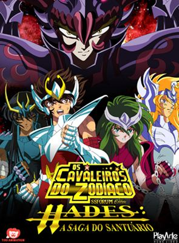
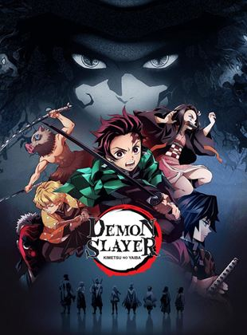

Séries
Animação

Saint Seiya (nome original da série) conta a história de um grupo de cinco jovens guerreiros cuja função era proteger Saori Kido, reencarnação de Atena, a deusa grega da sabedoria. Para lutar, eles utilizam a energia interior e do cosmos, e suas armaduras que são inspiradas em constelações e na mitologia grega. A animação é dividida em quatro sagas: Saga do Santuário; Saga de Asgard; Saga de Poseidon; Saga de Hades.
Trailer indisponível
Cavaleiros do Zodíaco
Saint Seiya (nome original da série) conta a história de um grupo de cinco jovens guerreiros cuja função era proteger Saori Kido, reencarnação de Atena, a deusa grega da sabedoria. Para lutar, eles utilizam a energia interior e do cosmos, e suas armaduras que são inspiradas em constelações e na mitologia grega. A animação é dividida em quatro sagas: Saga do Santuário; Saga de Asgard; Saga de Poseidon; Saga de Hades.
Trailer indisponível

Em Kimetsu no Yaiba, Tanjiro, um bondoso jovem que ganha a vida vendendo carvão descobre que sua família foi massacrada por um demônio. E, para piorar, Nezuko, sua irmã mais nova e única sobrevivente, também acabou transformada em um demônio. Arrasado com essa sombria realidade, Tanjiro decide se tornar um matador de demônios para fazer sua irmã voltar a ser humana e para destruir o demônio que matou seus entes queridos.
Trailer
Demon Slayer
Em Kimetsu no Yaiba, Tanjiro, um bondoso jovem que ganha a vida vendendo carvão descobre que sua família foi massacrada por um demônio. E, para piorar, Nezuko, sua irmã mais nova e única sobrevivente, também acabou transformada em um demônio. Arrasado com essa sombria realidade, Tanjiro decide se tornar um matador de demônios para fazer sua irmã voltar a ser humana e para destruir o demônio que matou seus entes queridos.
Trailer